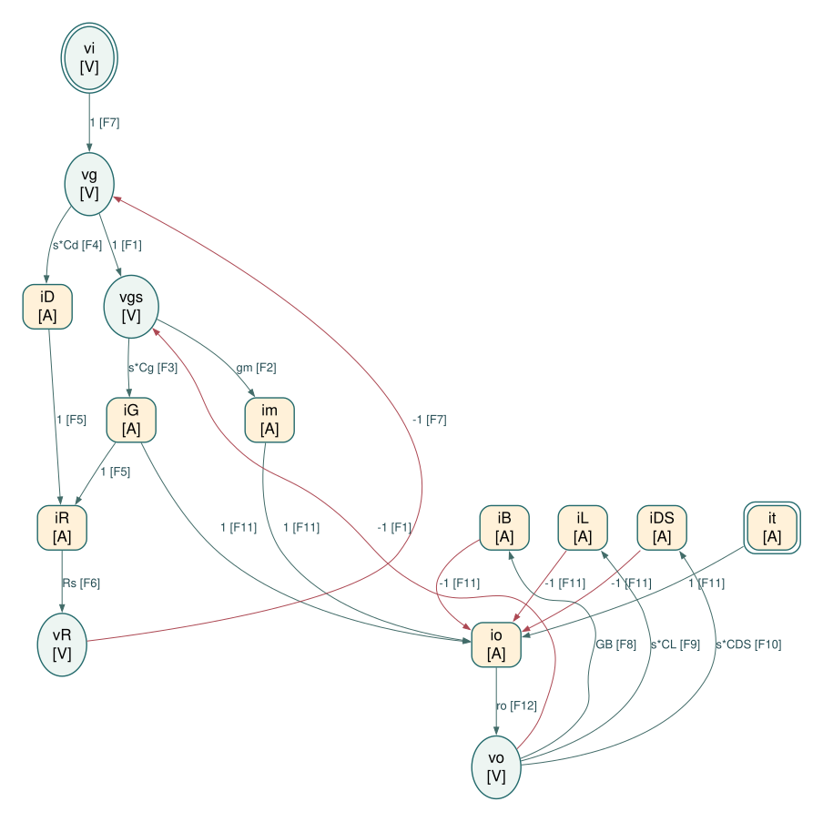
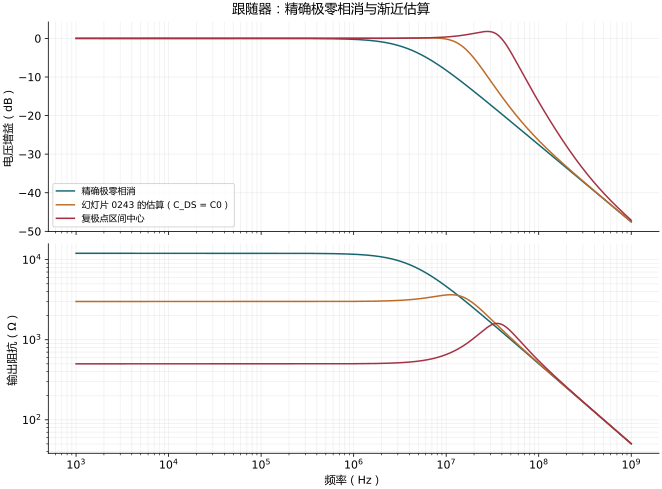

高频源极跟随器：二阶模型、峰化与真正的极零相消
对应：0241–0243。
独立 Physical / Causal SFG Markdown
A. 选取的 SFG 节点及选择理由
漏极接交流地，衬底接源极；输入串联 Rs；保留 Cg = CGS、Cd = CGD、CL、CDS、有限 ro 和偏置支路输出电导 GB。iG 从栅极流向源极；im 注入源极；iB、iL、iDS、io 从源极流向地；测试电流 it 从外部注入输出，电压激励分析时令 it = 0。CL 与 CDS、go 与 GB 分开建模，不在边系数中预先合并。
所有量为工作点附近的小信号，电容采用零初始条件的拉普拉斯关系。按局部器件关系选择因果方向，不预先求整体传递函数，也不消元为最少节点图。
| 节点 |
类型 |
选择理由 |
vi（vi） |
电压 / V |
独立输入电压。 |
it（it） |
电流 / A |
独立输出测试电流；可设为零，保留电流输入端口。 |
vg（vg） |
电压 / V |
实际栅极电压。 |
vgs（vgs） |
电压 / V |
跨导源与 Cg 共用的端电压。 |
im（im） |
电流 / A |
MOS 跨导源注入输出的电流。 |
iG（iG） |
电流 / A |
Cg 从栅极到源极的电流。 |
iD（iD） |
电流 / A |
Cd 从栅极到交流地的电流。 |
iR（iR） |
电流 / A |
输入电阻电流。 |
vR（vR） |
电压 / V |
输入电阻压降。 |
iB（iB） |
电流 / A |
偏置支路有限电导引起的输出电流。 |
iL（iL） |
电流 / A |
负载电容 CL 电流。 |
iDS（iDS） |
电流 / A |
器件 CDS 电流。 |
io（io） |
电流 / A |
输出电阻 ro 电流。 |
vo（vo） |
电压 / V |
源极输出电压。 |
B. 独立约束
每行是一个独立局部约束，整理为 y=∑kakxk。右侧的每一项生成一条边；一行分成多条边不等于重复使用约束。
| 约束 |
物理来源 |
定向方程 |
| F1 |
栅源端电压定义（KVL） |
vgs=vg−vo |
| F2 |
MOS 跨导源的本构关系 |
im=gmvgs |
| F3 |
Cg 的本构关系 |
iG=sCGSvgs |
| F4 |
Cd 的本构关系 |
iD=sCGDvg |
| F5 |
栅极 KCL |
iR=iG+iD |
| F6 |
Rs 的本构关系 |
vR=RSiR |
| F7 |
输入串联支路 KVL |
vg=vi−vR |
| F8 |
偏置支路 GB 的本构关系 |
iB=GBvo |
| F9 |
CL 的本构关系 |
iL=sCLvo |
| F10 |
CDS 的本构关系 |
iDS=sCDSvo |
| F11 |
源极输出节点 KCL |
io=im+iG+it−iB−iL−iDS |
| F12 |
ro 的本构关系 |
vo=roio |
电阻只使用 v=Ri 这一方向，不再同时添加 i=v/R；同一电容的支路电流可以出现在两端节点的 KCL 中，但其本构关系只建一次。
本图保留有限输出电阻以采用“电流 → 电压”的电阻方向。若另取输出电导严格为零的理想模型，应重新分配约束方向，不能直接在图上使用无穷大的电阻。
C. SFG edge list
E01: vg --(1)--> vgs [F1]
E02: vo --(-1)--> vgs [F1]
E03: vgs --(gm)--> im [F2]
E04: vgs --(s*Cg)--> iG [F3]
E05: vg --(s*Cd)--> iD [F4]
E06: iG --(1)--> iR [F5]
E07: iD --(1)--> iR [F5]
E08: iR --(Rs)--> vR [F6]
E09: vi --(1)--> vg [F7]
E10: vR --(-1)--> vg [F7]
E11: vo --(GB)--> iB [F8]
E12: vo --(s*CL)--> iL [F9]
E13: vo --(s*CDS)--> iDS [F10]
E14: im --(1)--> io [F11]
E15: iG --(1)--> io [F11]
E16: it --(1)--> io [F11]
E17: iB --(-1)--> io [F11]
E18: iL --(-1)--> io [F11]
E19: iDS --(-1)--> io [F11]
E20: io --(ro)--> vo [F12]
D. ASCII SFG
以下按目标节点分组绘制，重复出现的变量名指同一个节点；所有连接均列出。V 为电压节点，A 为电流节点。
vg --(1)---+
|
vo --(-1)--+--> vgs [V] (F1)
vgs --(gm)--> im [A] (F2)
vgs --(s*Cg)--> iG [A] (F3)
vg --(s*Cd)--> iD [A] (F4)
iG --(1)--+
|
iD --(1)--+--> iR [A] (F5)
iR --(Rs)--> vR [V] (F6)
vi --(1)---+
|
vR --(-1)--+--> vg [V] (F7)
vo --(GB)--> iB [A] (F8)
vo --(s*CL)--> iL [A] (F9)
vo --(s*CDS)--> iDS [A] (F10)
im --(1)----+
|
iG --(1)----+
|
it --(1)----+
|
iB --(-1)---+
|
iL --(-1)---+
|
iDS --(-1)--+--> io [A] (F11)
io --(ro)--> vo [V] (F12)

图中椭圆为电压节点，圆角矩形为电流节点，双边框为独立输入。每条边显示系数和约束编号；按图中箭头读取方向。
打开 SVG 矢量图 · DOT 连接文本 · 机器可读边表
E. 主要正向通路与反馈环路
- 跨导正向通路：vi → vg → vgs → im → io → vo；并行的 Cg 前馈通路为 vgs → iG → io → vo。
- 主要局部负反馈：vo → vgs → im → io → vo，输出在 vgs 的端电压定义中取负号。
- 栅极电流反馈：vg → vgs → iG → iR → vR → vg；Cd 也通过 iD → iR 影响输入压降。输出的 GB、CL、CDS 各自形成 vo → 支路电流 → io → vo 的负号返回路径。
- it → io → vo 明确保留输出测试电流的物理端口，测试时将 vi 设为零即可；无需先求整体传递函数或另造反向器件约束。
F. 逐边对应独立约束检查
| 边 |
起点 → 终点 |
系数 |
唯一来源约束 |
| E01 |
vg→vgs |
1 |
F1：栅源端电压定义（KVL） |
| E02 |
vo→vgs |
−1 |
F1：栅源端电压定义（KVL） |
| E03 |
vgs→im |
gm |
F2：MOS 跨导源的本构关系 |
| E04 |
vgs→iG |
sCGS |
F3：Cg 的本构关系 |
| E05 |
vg→iD |
sCGD |
F4：Cd 的本构关系 |
| E06 |
iG→iR |
1 |
F5：栅极 KCL |
| E07 |
iD→iR |
1 |
F5：栅极 KCL |
| E08 |
iR→vR |
RS |
F6：Rs 的本构关系 |
| E09 |
vi→vg |
1 |
F7：输入串联支路 KVL |
| E10 |
vR→vg |
−1 |
F7：输入串联支路 KVL |
| E11 |
vo→iB |
GB |
F8：偏置支路 GB 的本构关系 |
| E12 |
vo→iL |
sCL |
F9：CL 的本构关系 |
| E13 |
vo→iDS |
sCDS |
F10：CDS 的本构关系 |
| E14 |
im→io |
1 |
F11：源极输出节点 KCL |
| E15 |
iG→io |
1 |
F11：源极输出节点 KCL |
| E16 |
it→io |
1 |
F11：源极输出节点 KCL |
| E17 |
iB→io |
−1 |
F11：源极输出节点 KCL |
| E18 |
iL→io |
−1 |
F11：源极输出节点 KCL |
| E19 |
iDS→io |
−1 |
F11：源极输出节点 KCL |
| E20 |
io→vo |
ro |
F12：ro 的本构关系 |
共 14 个节点、12 个独立约束、20 条边。每个非输入节点只有一个定义方程；每条边属于唯一约束。边系数仅含单个器件的本构参数（包括理想受控源的常数增益）、电容导纳或带符号的 1。
本节输出止于 Physical / Causal SFG，不进一步化为 algebraic SFG。
原有公式推导与必要近似（展开查看）
电路与符号
漏极为 AC 地，衬底跟源极相连；RS 串在信号源和栅极间。定义
Cg=CGS,Cd=CGD,C0=CL+CDS,g=go+GB,GS=1/RS.
Cg 跨栅极–源极；Cd 因漏极接地，成为栅极对地电容。输出是源极，不能套用共源级米勒增益。
完整二节点方程
[GS+s(Cd+Cg)]vg−sCgvo=GSvi,
−(gm+sCg)vg+[gm+g+s(Cg+C0)]vo=0.
令
C2=C0Cd+C0Cg+CdCg,
D(s)=gm+g+s[Cg+C0+RSgmCd+RSg(Cd+Cg)]+s2RSC2.
则
H(s)=vivo=D(s)gm+sCg,Zo(s)=itestvovi=0=D(s)1+sRS(Cd+Cg).
这两个传输共用同一分母，但分子不同，所以零点不同。
0241：化成教材形式
令 g=0，除以 gm：
H=1+sB+s2RSC2/gm1+sCg/gm,B=RSCd+gmCg+C0.
教材另外保留 RSCg/(gmro)，却省去常数 1/(gmro) 与
RSCd/(gmro)。这是选择性的一阶修正；若需要有限 ro 的一致模型，应使用上面的完整 D(s)。
电压零点为 szv=−gm/Cg（左半平面）。若令分母 a0+a1s+a2s2，则
sp1,p2=2a2−a1±a12−4a0a2.
复极点条件是 a12<4a0a2。复极点不必然造成可见的增益峰值：零点及阻尼还会影响幅度，需要实际计算 ∣H(jω)∣。
0242：复极点区域的精确边界
以下令 g=0，并在扫描 gm 时先把电容视为固定。设
Bc=Cg+C0,r=Cd(C0+Cg)C0Cg,k=1+r,gmr=RSCdBc,x=gmrgm.
将判别式除以 Bc2：
(x+1)2−4kx<0.
因此真正的边界为
x±=(k±k−1)2,gm,±=gmrx±,x+x−=1.
教材的 gmr 正是两个边界的几何中心。但若把「宽度」定义成上下界比，
Wg=gm,−gm,+=(k+k−1)4,
就不是幻灯片列的 Δgmr=CDGt/CDG=r。
原图的 CDGt=C0Cg/(C0+Cg) 可视为一个电容比参数，但不能不加定义地当作精确区域宽度，再套 gmr/Δgmr 求下界。
将零点代入分母：不能只看渐近线交叉
电压零点 s=−gm/Cg 代入：
D(−gm/Cg)=Cg2C0gm[RSgm(Cd+Cg)−Cg].
除去退化情况，精确相消条件是
gm,cancel=RS(Cd+Cg)Cg≃RS1(Cd≪Cg).
这说明 0242 的 1/RS 是近似而非一般精确相消点。
输出阻抗零点是
szo=−RS(Cd+Cg)1≃−RSCg1.
把它代入同一分母得到相同的精确相消条件。在该点：
Zo(s)=gm+s[C0+CgCd/(Cg+Cd)]1,
H(s)=gm+s[C0+CgCd/(Cg+Cd)]gm.
0243 的
gmu≃(Cg+CDS)/[RS(Cg+Cd)]
是把近似极点与零点位置对齐的估计；它只有在 CDS≪Cg 等条件下接近上面的精确相消值。保留任意 CDS 时，代入完整分母不会得到零。
高 gm 时，一个极点趋向 −1/(RSCd)，因此可得到图中的
fd,highgm≃1/(2πRSCd)。输出阻抗先升后降的区段可呈感性。
近似与验算
| 原式 → 简式 |
条件 |
失效情况 |
| g→0 |
不只 g≪gm，还须 RSg(Cd+Cg) 对 a1 足够小 |
大 RS |
| Cd+Cg→Cg |
Cd≪Cg |
补偿电容加大后 |
| gm,cancel→1/RS |
同上 |
0242 的补偿恰好会改变此比值 |
| 极点渐近交点 → 精确相消 |
必须另外验 D(sz)=0 |
复极点或电容比不小 |
| 固定电容扫 gm |
局部模型比较 |
真实偏置变动也改变电容 |

图中标出完整模型相消值与教材估计值。符号程序验证两个零点代入结果及相消后的一阶式。
例图固定 RS=10 kΩ、Cg=1 pF、Cd=0.2 pF、CDS=3 pF、CL=0、g=0。完整相消值为 83.33 µS，0243 估式为 333.33 µS，复极点区域的几何中心为 2 mS。这是固定电容的模型比较，不是扫描真实器件偏置。
来源对照
| 幻灯片 |
PDF 页 |
书本页 |
讲解所在 PDF 页 |
| 0241 |
70 |
71 |
70 |
| 0242 |
71 |
72 |
70, 71 |
| 0243 |
71 |
72 |
71 |
Spectre 仿真结果
本推导组的代表模型已完成 Spectre 验证；覆盖范围以所列网表为准，未逐一搭建所有幻灯片电路。
线性 AC 6 · MOS 电路 1 · 极零 2 · 瞬态 0：所列检查全部通过。
案例：follower_cancel、follower_cancel_z、follower_book、follower_book_z、follower_center、follower_center_z、mos_follower、follower_cancel、follower_center
查看本组波形、模型条件与 CSV → · 仿真 Markdown 解释
{kind=link}
{kind=link}
{kind=link}
{kind=link}